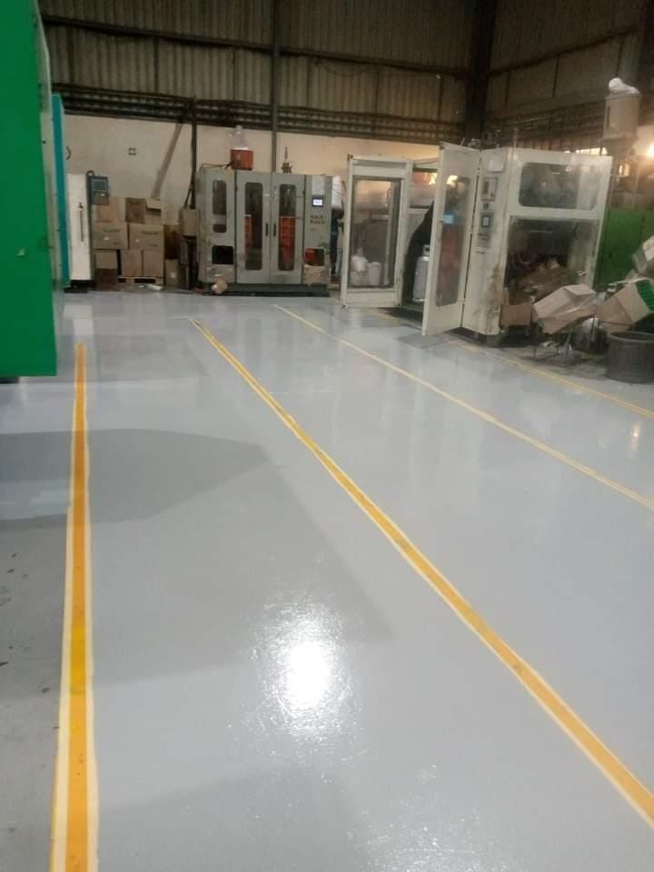
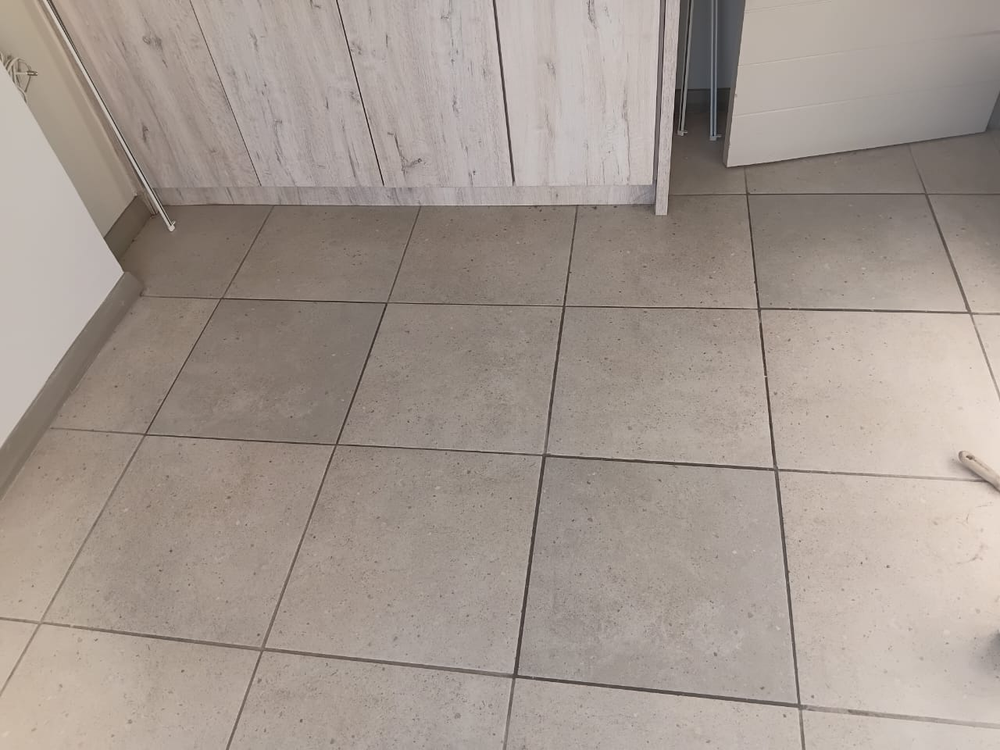
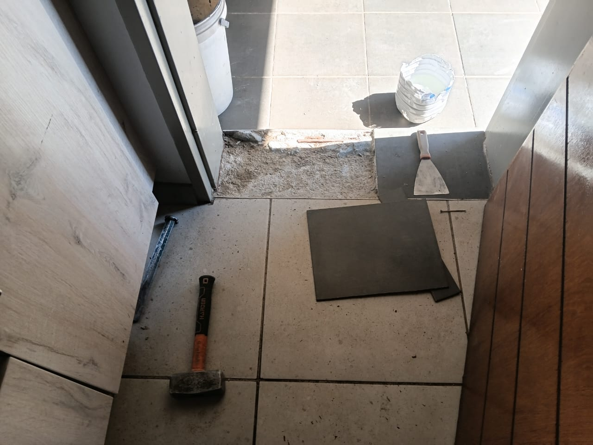
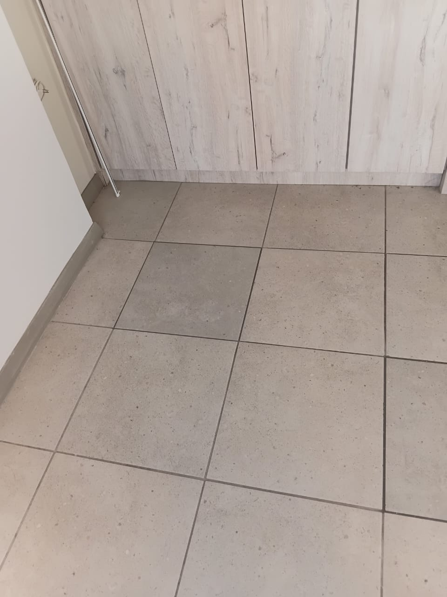
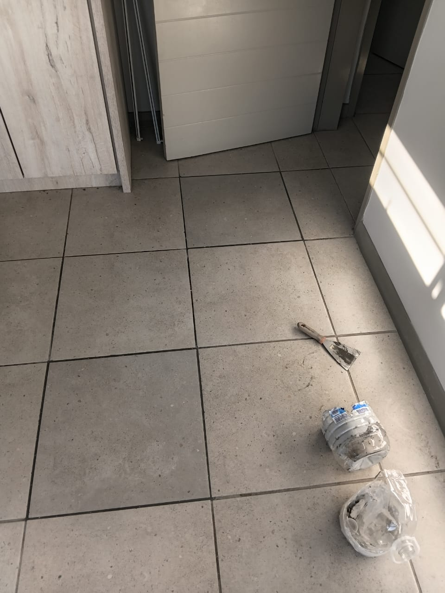
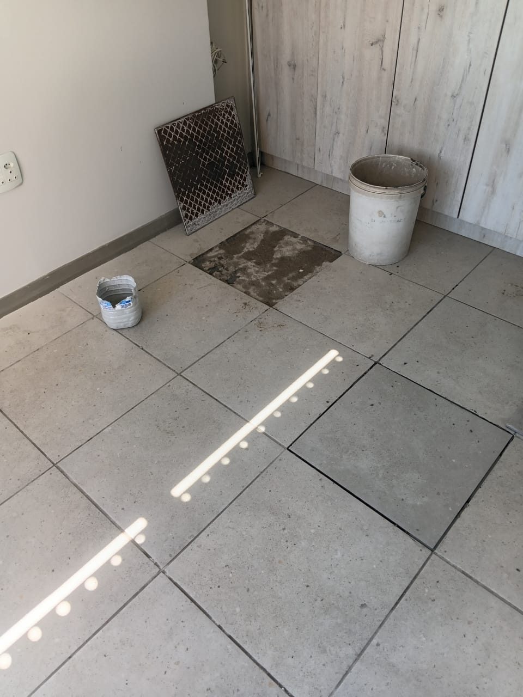
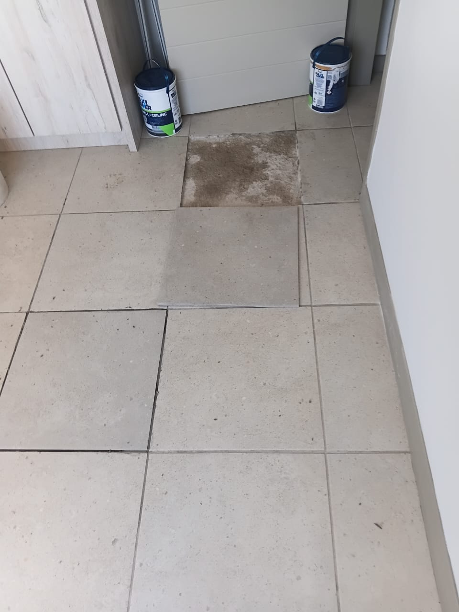
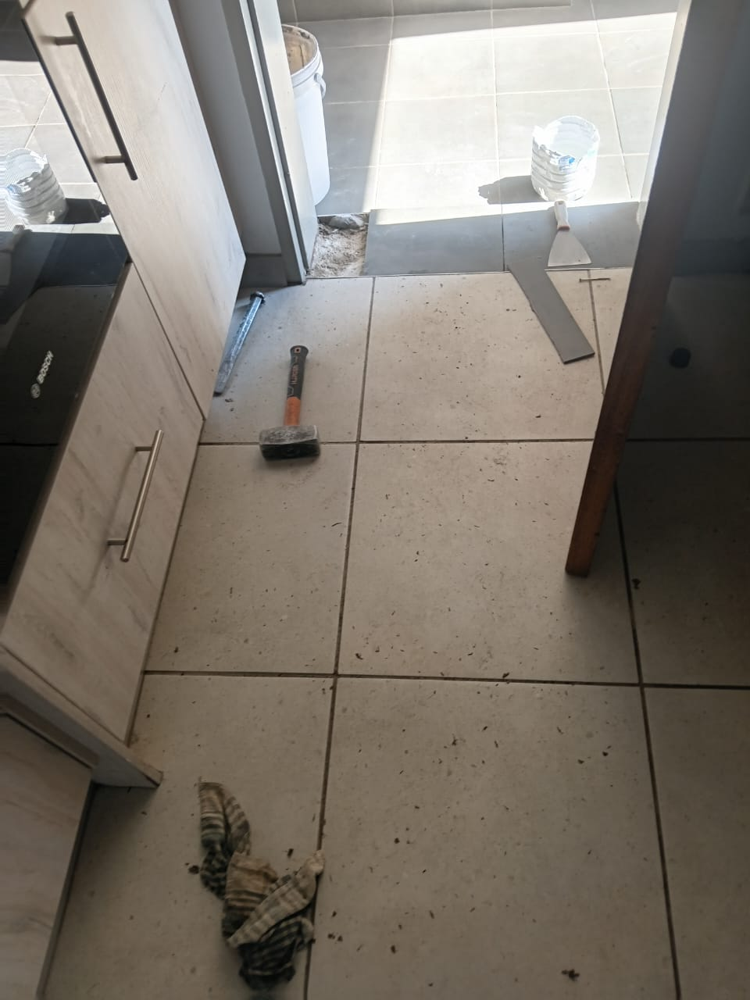
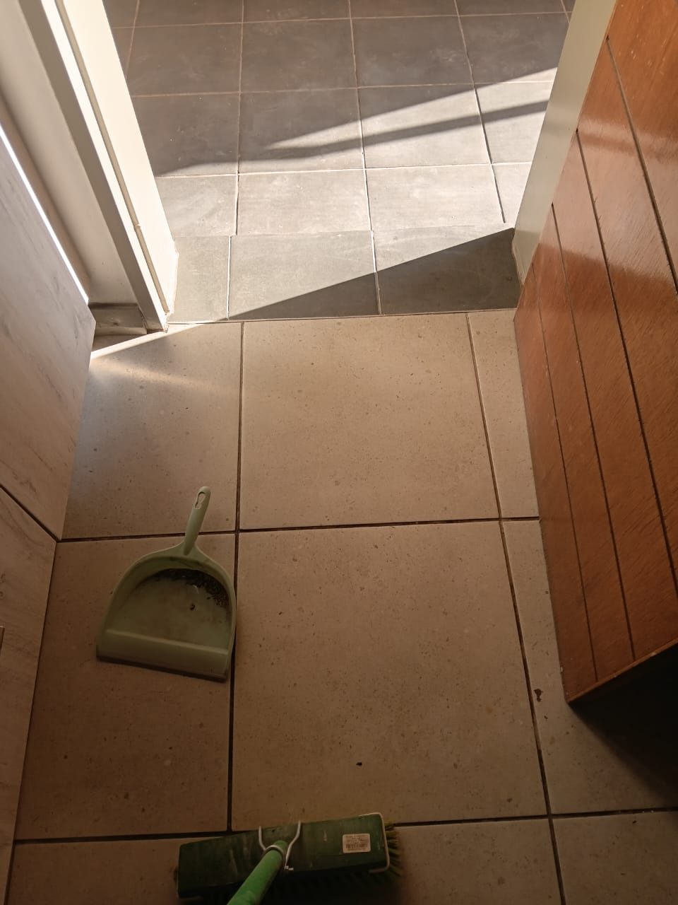
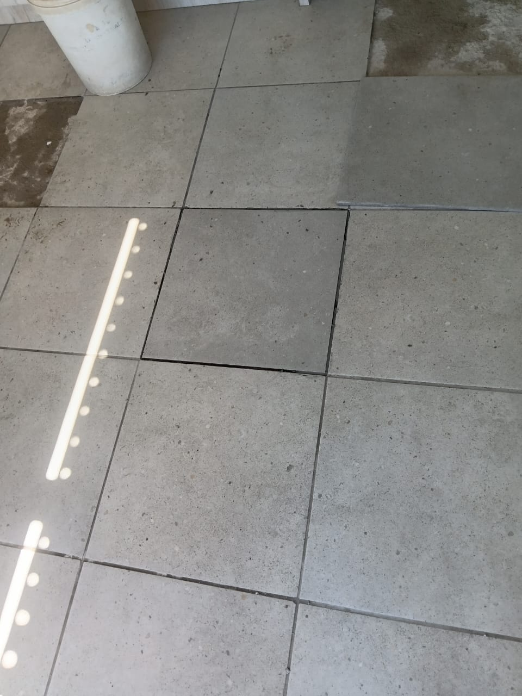

Epoxy flooring is a durable and attractive solution for both residential
and commercial spaces. It involves applying a two-part epoxy resin to concrete
floors, creating a hard, glossy surface that is resistant to stains, chemicals,
and wear.
At Jay Paintworks, we specialize in epoxy floor installations, offering a range
of colors and finishes to suit your style and needs. Our team of experts ensures
a smooth application process, resulting in a high-quality finish that enhances
the look and functionality of your space.
Whether you're looking to upgrade your garage, basement, or commercial
facility, our epoxy flooring services provide a long-lasting solution that
is easy to maintain and visually appealing.
Benefits of Epoxy Floors
Durability
Epoxy floors are highly resistant to wear and tear, making them ideal for high-traffic areas.
Easy Maintenance
The smooth surface of epoxy floors makes them easy to clean and maintain, requiring only regular sweeping and occasional mopping.
Aesthetic Appeal
Available in a variety of colors and finishes, epoxy floors can enhance the look of any space.
Chemical Resistance
Epoxy flooring is resistant to many chemicals, making it suitable for industrial and commercial environments.
Floor Tiling
In addition to epoxy flooring, we also offer professional floor tiling
services. Our team is skilled in installing a variety of tile types, including
ceramic, porcelain, and natural stone. We work closely with our clients to
select the perfect tiles that match their style and functional needs.
Our floor tiling services include surface preparation, precise tile
installation, and finishing touches to ensure a flawless result. Whether
you're renovating your home or upgrading your commercial space, our
floor tiling solutions provide durability and aesthetic appeal.










Frequently Asked Questions
What types of paint do you use?
We use high-quality paints from reputable brands to ensure a durable and beautiful finish. The type of paint used depends on the surface and location (interior or exterior).
How long does a typical painting project take?
The duration of a painting project varies based on the size and complexity of the job. We provide an estimated timeline during the consultation phase.
Do you offer free estimates?
Yes, we offer free estimates for all our painting services. Contact us to schedule a consultation.
What areas do you serve?
We serve various locations. Please contact us to find out if we cover your area.
How many coats of paint do I need to change the colour of a wall?
Actual number of coats depends on the quality of paint as well as color shades you're switching to and from but expect atleast two coats to change color, especially when switching between light and dark shades or using vibrant colors. For a significant change, like dark to light, or when using high-pigment colors such as bright red, yellow, or orange, a third coat may be necessary to ensure complete coverage and a uniform finish.
A significant color change requires a second coat to completely cover the old color and prevent it from showing through.
Using a primer before painting can help reduce the number of coats needed, especially when making drastic color changes. Primers create a uniform base that enhances paint adhesion and coverage.